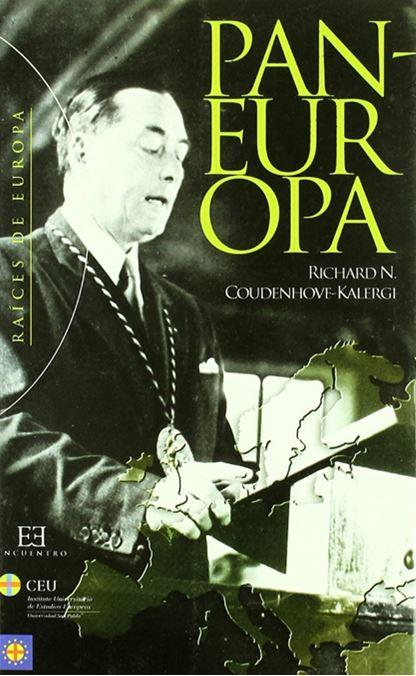
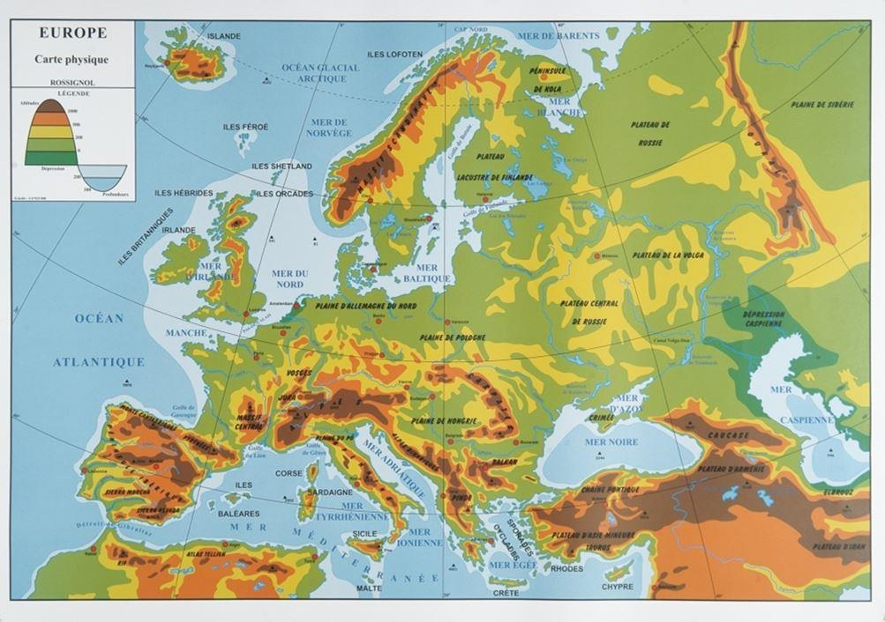
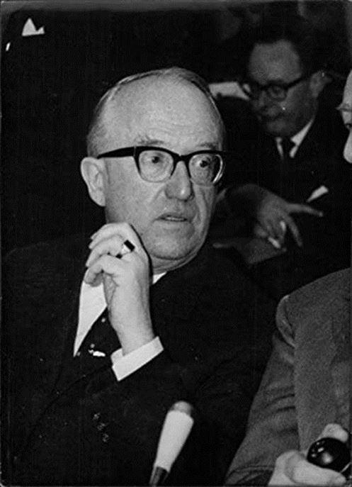
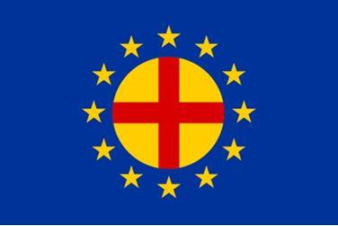
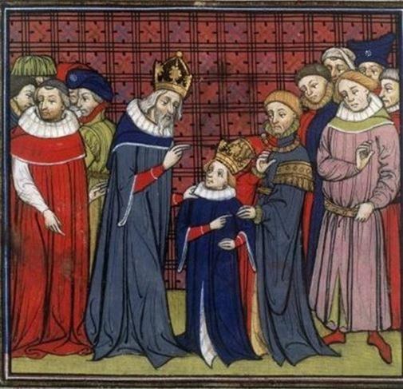
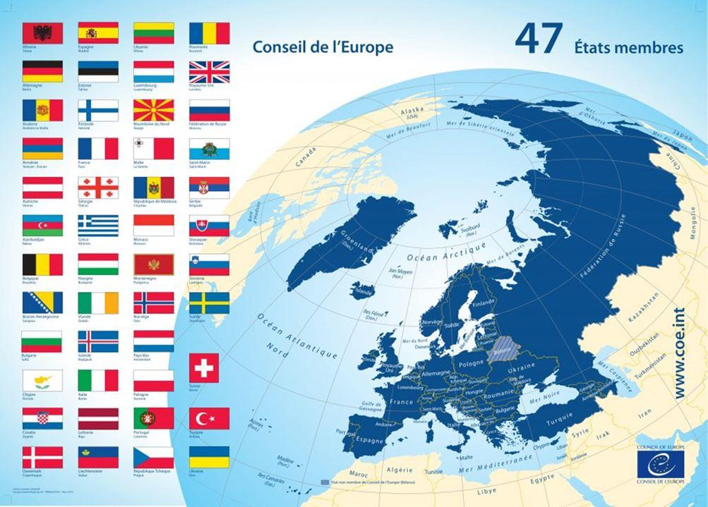
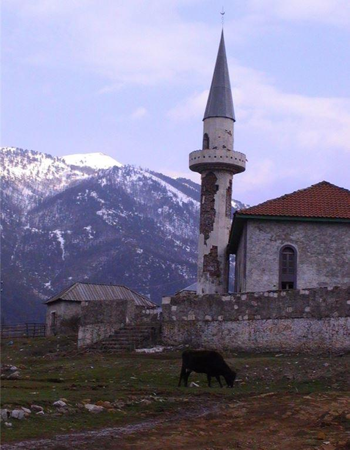

Pour mémoire, PanEuropa est un ouvrage écrit en 1923 par Richard N. Coudenhove-Kalergi, un aristocrate austro-hongrois qui a pris la nationalité tchécoslovaque après la dissolution de l’Autriche-Hongrie consécutive à la Première Guerre Mondiale.
Ce conflit a été un tel cataclysme qu’un grand mouvement pacifiste en est résulté : c’est l’époque du « Plus jamais ça. » Il n’en a, hélas, rien été.
Pour appréhender la vision de «RCK», le mieux est de lui laisser la parole. Bien sûr, le monde a profondément changé en un siècle mais l’approche de l’auteur garde une pertinence certaine.
« L’hégémonie de l’Europe sur le monde est à jamais brisée. On a craint l’Europe, maintenant on la plaint. Autrefois elle parlait en maîtresse, maintenant elle est contrainte à la défensive : sur le plan militaire, menacée par l’invasion russe, sur le plan économique, menacée par la concurrence américaine. Elle est endettée, morcelée, inquiète, affaiblie, elle est déchirée par des luttes nationales et sociales, elle est gravement atteinte dans sa démographie et dans son industrie, elle est plongée dans un chaos économique et monétaire. Aussi s’en va-t-elle d’un présent sans espoir vers un avenir incertain
Que la situation de la Russie soit encore plus sombre, ceci ne peut rassurer l’Europe car le temps travaille pour la Russie et contre l’Europe.
Les richesses inouïes de son sol, ses ressources en hommes, encore inemployées et plus homogènes, garantissent en tous cas son avenir.
Quelle que soit la manière dont se présente cet avenir, la Russie sera de nouveau, tôt ou tard, grande puissante et riche.
L’Europe, au contraire n’a devant elle qu’un avenir des plus incertains. Elle a perdu son hégémonie sur le monde parce que ses peuples étaient désunis; Elle perdra son indépendance et ce qui lui reste de bien-être si elle continue d’être désunie. Le XXème siècle qui vit l’Europe tomber de son trône, verra-t-il aussi sa décadence ? Cela dépendra de ce que feront ses peuples et aussi ses chefs. Obéiront-ils aux nécessités de l’heure ou se jetteront-ils les yeux fermés dans le précipice vers lequel ils courent sans arrêt ? »
Il faut y ajouter que durant le XXème siècle, le monde s’est rétréci, est devenu plus petit : par suite des progrès techniques de transport et de communication les villes et les pays se sont rapprochés de plus en plus. Ne parle-t-on pas, de nos jours, du « village planétaire « ?
Le problème est posé depuis un siècle. Il demeure. De nos jours apparait une Europe qui tente de s’unir au travers de « l’Union Européenne « mais qui reste divisée. Elle n’intègre pas la Russie, le Belarus, plusieurs états des Balkans, la Moldavie. Elle voudrait intégrer des pays de civilisation islamique, comme l’Albanie, le Kosovo. Elle s’est engagée dans des contradictions inextricables. Certes, l’existence d’un empire d’Occident et d’un empire d’Orient remonte à loin, à l’Empire Romain. On a parfois dit précisément que l’Europe tentait de reconstituer l’Empire Romain mais il faut se souvenir de Charlemagne qui était simplement empereur d’Occident. Toute l’histoire de l’Europe oscille entre des tentatives d’union et des séparations (Louis XIV, Napoléon, Hitler...). Les volontés impériales ont conduit à des échecs et on se souviendra de la parole de Durosselle « Tout empire périra »

D’où partons nous ?
L’Europe géographique : il est évidemment aisé de définir les limites occidentales de l’Europe : ce sont des mers et des océans, y compris au nord de la Scandinavie avec l’Océan Arctique. On trouve la Mer du Nord, la Manche, l’Océan Atlantique et la Méditerranée. Plus loin, le Mer Noire et la Caspienne. Au delà, ce sont l’Afrique et l’Asie. La délimitation de l’Europe à l’Est est plus compliquée et c’est de là que sont nés les problèmes depuis des temps ancestraux.
Le Général De Gaulle définissait l’Europe comme allant de l’Atlantique à l’Oural mais c’était plutôt une approche par la civilisation, car les montagnes de l’Oural sont franchissables, un peu comme les Vosges ou le Jura et à cet égard, c’est à la Russie de se prononcer.
L’histoire n’est pas plus loquace : on ne compte plus les conflits entre Polonais, Lithuaniens, Russes, Suédois tout au long des siècles.
Aujourd’hui, et sur le plan politico-économique, nous connaissons l’Union Européenne mais elle n’est pas satisfaisante car voulue par les Américains après le Deuxième Guerre mondiale, sur le modèle des Etats-Unis précisément, fédérale et réduisant les états à de simples circonscriptions administratives, elle se heurte à l’histoire de nos nations et elle périclite; nous y reviendrons.
En réalité, le projet paneuropéen qui a voulu à un moment s’inspirer de l’organisation panaméricaine n’est pas crédible dans cette acception. Au demeurant l’organisation panaméricaine a vécu : de nombreux pays latino-américains ont pris leurs distances avec la volonté hégémonique des USA : Brésil, Argentine, Bolivie, Chili. Actuellement, on notera même de sérieuses tensions entre Washington et Cuba et encore plus chaudement le Venezuela. Ce n’est donc pas la solution. Retournons aux sources.
La volonté de RCK, c’est d’abord de promouvoir la paix en Europe et autant que faire se peut, dans le monde. La tentative de la Société des Nations a échoué et n’a pu empêcher la Deuxième Guerre mondiale mais nous avons aujourd’hui l’Organisation des Nations Unies qui est dotée d’un Conseil de Sécurité et peut mobiliser des troupes, les « casques bleus » pour intervenir dans des conflits et empêcher la guerre. Les troupes de l’ONU ont été et sont impliqués dans de nombreux conflits.
La vocation du mouvement paneuropéen reste donc pleine et entière : œuvrer pour la paix, la sécurité, la coopération entre les nations.
Le fiasco de l’Union européenne
La Deuxième Guerre mondiale a consacré la supériorité militaire de l’Amérique dont les dirigeants ont voulu prolonger cette victoire sur le plan politique et sur le plan économique. S’estimant être un modèle pour le monde, ils ont, en ce qui concerne le continent européen, œuvré pour imposer une Europe américaine.
Néanmoins, tout est parti d’une évaluation biaisée. Si l’Amérique a pu mener son débarquement en France, c’est aussi, voir surtout parce que la Russie a fixé à l’Est de nombreuses divisions hitlériennes qui n’ont pu participer à la bataille de l’Ouest.
En outre, l’Europe était - et est toujours - un ensemble de nations distinctes ayant chacune, son histoire et sa culture, souvent sa langue propre. Rien à voir avec l’histoire des états américains où nombreux sont ceux qui ont été créés par un simple découpage géométrique et ne sont que de simples subdivisions administratives d’un état fédéral, même si elles disposent de quelque autonomie.
C’est donc cette Amérique qui a prétendu - et prétend toujours - formater l’Europe. On sait aujourd’hui que Robert Schuman, le » grand Schuman «, « père de l’Europe » était en réalité un agent américain rémunéré. Il en est de même pour Jean Monnet et on sait aujourd’hui que le fameux discours prononcé par Schuman a été rédigé par les services de Dean Acheson, transporté par Monnet, et remis à Schuman pour qu’il le lise publiquement. Les débuts de l’Union Européenne, la CECA, les premiers dirigeants, Adenauer par exemple, flanqué de Walter Hallstein, ancien juriste nazi récupéré par les Américains sont des fantoches manipulés.
L’organisation ainsi mise en place ne répond ni aux besoins ni aux aspirations des peuples européens et cela apparaît de plus en plus. L’UE se lézarde.
Mais en tout premier lieu, elle n’est pas indépendante. Elle apparait manipulée par l’OTAN, d’où les pressions visant à ramener les organes européens et notamment le parlement à Bruxelles, siège de l’OTAN et au détriment de Strasbourg. L’essentiel des états européens appartient d’ailleurs à l’OTAN qui imprime notamment une politique russophobe contraire aux intérêts de nos pays. Il convient d’y apporter des rectifications.
C’est d’ailleurs de l’entourage de Walter Hallstein qu’est partie une campagne visant à déconsidérer RCK, relayée - comme c’est curieux - par des organisations néo-nazies-. En effet, la vision paneuropéenne est considérée comme rivale par les fondateurs de l’UE et ses tenants. En vérité, c’est bien le cas mais il suffit de laisser faire, car l’UE bat de l’aile de plus en plus sérieusement.
Il suffit de constater son échec sur le simple plan de l’alimentation. l’UE devait réduire la pauvreté or, un évènement comme l’épisode des Gilets Jaunes en France a démontré que bien des familles n’ont plus de quoi se nourrir , la deuxième quinzaine du mois. C’est vrai aussi sur le plan vestimentaire où des enfants vont encore à l’école pieds nus. L’UE n’est pas solidaire et la paupérisation saute aux yeux.
La pandémie que nous subissons démontre que la politique médico-hospitalière inspirée par Bruxelles est contre-performante, insatisfaisante en matière de santé.
En matière de sécurité collective, le tableau n’est pas plus brillant. A part la France qui performe dans l’aéronautique et le spatial, l’UE est un ensemble désarmé et qui perturbe les industries d’armement. Elle est tout aussi incapable de lutter contre une immigration invasive qui détruit l’emploi et paupérise les travailleurs. FRONTEX doit être réformée d’urgence.
Et l’euro ? Au départ, l’euro, monnaie unique et non pas monnaie commune comme l’ecu devait donner à l’UE une monnaie forte, concurrente du dollar. Il n’en est rien au bout de vingt ans. Des économistes sérieux, tel Charles Gave pronostiquent un éclatement de la zone euro ou au moins une scission entre un « euro fort» en Allemagne, Hollande, et un «euro faible» dans les pays du sud. On voit déjà des ressortissants de pays du sud ouvrir des comptes dans des banques allemandes pour que leurs euros restent forts. On peut aussi acheter de l’or, de l’argent-métal pour protéger ses avoirs.
Les perspectives
Tout d’abord, l’Europe doit être regardée comme un tout au niveau de sa civilisation. Le trait d’union entre les pays européens, c’est le Christianisme. Le mouvement remonte à la christianisation de l’empire romain par l’empereur Constantin dont RCK a repris le symbole : une croix rouge imprimée sur soleil d’or.
On notera, quatre siècles plus tard, l’action de Charlemagne qui convertit, l’épée à la main les peuples barbares qu’il conquiert, notamment les Saxons. La civilisation européenne se défend contre de multiples invasions : perses, germaniques sans compter les Huns d’Attila. Aujourd’hui, c’est l’Afrique mais aussi une partie de l’Asie qui monte à l’assaut de l’Europe ; le problème reste identique. On a craint, après-guerre, une invasion soviétique et du pacte de Varsovie qui ne s’est pas produite...Aujourd’hui, la Russie est plutôt dans une attitude de résistance défensive.
Mais l’Europe ne se fera que si les Européens ressentent un besoin d’appartenance. Nous en sommes loin. Que faut-il faire ? La réponse nous est fournie par le psychologue américain Abraham MASLOV qui a étudié la hiérarchie des besoins humains et a constitué une pyramide de ces besoins, des plus essentiels aux plus éthérés; A la base de la pyramide, les besoins vitaux de nourriture de vêtements de perpétuation de l’espèce. L’Europe, nous l’avons vu, n’a pas su satisfaire ces besoins dans une partie de ses populations.
Le second niveau est constitué par les besoins de sécurité, individuelle et collective. La sécurité individuelle, c’est le domaine médico-hospitalier et nous avons vu qu’avec la pandémie du covid, cette sécurité laissait à désirer. Il semblerait, selon certaines statistiques que la durée de vie soit en diminution dans certains pays. La sécurité collective, c’est la défense et il faut bien constater qu’à part la France, peu de pays européens font les efforts requis. Ils préfèrent s’en remettre au parapluie américain, ce qui est très dangereux.
Ce n’est que si ces niveaux sont franchis qu’apparait le besoin d’appartenance. L’unité européenne est donc encore loin et l’Union Européenne apparait comme une fiction pour bien des années encore à supposer qu’elle subsiste. Or n’oublions pas la remarque du président français MACRON jugeant que « l’Europe est au bord du précipice. N’oublions pas non plus le pronostic de Vladimir POUTINE selon lequel l’Union Européenne s’effondrera dans la décennie qui vient. D’ores et déjà, on perçoit des craquements. C’est d’abord le GROUPE DE VISEGRAD (Pologne, République Tchèque, Slovaquie et Hongrie) qui n’entend pas s’en laisser imposer par Bruxelles. Plus récemment, c’est la Cour Constitutionnelle allemande qui refuse l’autorité supranationale de la Cour de Justice Européenne, en quoi elle vient d’être rejointe par la Cour suprême de Roumanie. L’UE se dirige vers des turbulences.
Manifestement, l’Union Européenne est victime de ses prétentions fédérales, comprenons impériales et de plus en plus mal supportées, surtout lorsqu’elles visent les domaines régaliens des nations ou qu’elles prétendent s’ouvrir à des pays qui n’appartiennent pas à notre civilisation : en premier lieu la Turquie et ses pseudopodes : l’Albanie, le Kosovo entre autres. On notera en outre que le Kosovo n’est pas reconnu par 5/7 de la population mondiale.
Face à ces situations, la Paneurope est-elle en panne ? Non, elle s’appuie sur deux organisations puissantes : le Conseil de l’Europe et l’Organisation pour la Sécurité et la Coopération en Europe (OSCE).
-LE CONSEIL DE L’EUROPE est une organisation intergouvernementale institué le 5 mai 1949 par le Traité de Londres. Il précède donc l’UE et le Traité de Rome et comprend 47 membres soit 830 millions de ressortissants (l’UE seulement 27). Cette organisation vise à protéger les droits de l’homme, à promouvoir la démocratie, assurer la prééminence du droit, concerner tous les domaines de la vie courante, favoriser le progrès économique et social, la culture, la pratique des langues, la coopération internationale, la paix et la justice, les valeurs spirituelles et morales du patrimoine commun de l’Europe, la liberté individuelle, la liberté politique. C’est une organisation fondamentale qui comporte en outre un organe consacré aux pouvoirs locaux et régionaux.
-L’ORGANISATION POUR LA SECURITE ET LA COOPERATION EN EUROPE. Elle fait suite aux accords d’Helsinki de 1975 et est la plus grande organisation de sécurité régionale du monde (57 états-membres). Elle œuvre en faveur de la paix, de la démocratie, de la stabilité pour plus d’un milliard de personnes. Des pays non européens ont souhaité adhérer et participer. Elle englobe les dimensions politico-militaire, économique, environnementale et humaine. Elle aide à supprimer les divergences entre états participants, à prévenir les conflits, à gérer les crises, à renforcer la confiance entre les états. A l’heure actuelle par exemple, elle est présente dans les Balkans et en Ukraine. Son siège est à Vienne. Ses deux principes de base sont l’intangibilité des frontières et le respect des minorités ethniques, nationales, culturelles, linguistiques.
Le mouvement paneuropéen repose donc sur deux piliers solides. On remarquera que ces deux piliers sont des organisations intergouvernementales.
L’APPROCHE D’UNE EUROPE INTERGOUVERNEMENTALE : L’action gaulliste et le PLAN FOUCHET.
Revenu au pouvoir en 1958, juste l’année suivant le Traité de Rome, le Général De Gaulle a tout de suite compris que ce que l’on appelle aujourd’hui l’UNION EUROPEENNE était une entreprise américaine de domination de l’Europe. Il a donc œuvré pour éviter cette organisation ou en tous cas limiter son influence. Soucieux des intérêts nationaux, il s’est efforcé d’infléchir la tendance qui s’amorçait.
Il a donc demandé à son ministre Christian FOUCHET, d’élaborer à l’aide d’une commission intergouvernementale un plan. En réalité, il y a eu deux versions : l’une en 1961, l’autre en 1962. Le plan Fouchet vise à l’élaboration d’une politique étrangère commune entre les six pays de la Communauté européenne, à assurer une étroite collaboration en matière de science et de culture, l’épanouissement du patrimoine commun, la sauvegarde des valeurs de civilisation, contribuer à la défense des droits de l’homme, des libertés fondamentales et de la démocratie. Il vise également à renforcer la coopération avec les autres nations libres, la sécurité contre toute agression grâce à l’adoption d’une politique commune de défense.
Il s’agit donc de promouvoir une Europe de Nations, en contradiction avec les institutions de la Communauté qui s’inspirent d’une démarche supranationale. La politique étrangère commune proposée pose le problème de la relation avec les autres membres de l’OTAN et demande de préciser la relation avec les Etats Unis. Ce sont ces questions qui inquiètent les autres participants et conduiront à l’échec du plan. Dès lors, le Général De Gaulle décide qu’une alternative est constituée par la relation franco-allemande qu’il faut renforcer., d’où le Traité de l’Elysée.
Le plan FOUCHET visait d’ailleurs à une organisation complète et à sa gouvernance. Le Général DE GAULLE était en relation régulière avec RCK. On notera que le projet paneuropéen est plus que proche du plan précité et c’est d’ailleurs le Général qui a décidé la création d’une branche française du mouvement paneuropéen : le CFUP, Comité Français de l’Union Paneuropéenne qui existe aujourd’hui sous le nom d’Union Paneuropéenne de France.
L’action
Pour mener son action, le mouvement paneuropéen peut donc s’appuyer sur deux piliers institutionnalisés : le Conseil de l’Europe et l’OSCE. Le premier objectif est de satisfaire les deux premiers échelons de la pyramide de MASLOV.
Un premier souci, le plus évident est de nourrir correctement les Européens. La question est de savoir si les carences sont du domaine économique ou du domaine politique et social. Un premier acte doit être de réunir une grande conférence agraire du même type que celle qui s’est tenue à Vienne en 1935 : comment aménager l’espace pour améliorer la production agricole, production qui pourrait même devenir un atout au plan international en écoulant les éventuels surplus. Cette conférence ne peut être évidemment initiée que par des acteurs de haut niveau, politiques et économiques. Elle doit concerner tous les paneuropéens, de la Baltique à la Caspienne.
Parallèlement, il faut habiller et chausser nos peuples, ce qui peut concerner évidemment les politiques mais peut être traité par le monde associatif et humanitaire. La question a déjà été traitée par des Américains vis à vis de l’Argentine et leurs initiatives peuvent être copiées.
La solidarité paneuropéenne doit s’exercer: on pense par exemple à la Moldavie.
Concernant le second étage de la pyramide, il est nécessaire de revoir de fond en comble la politique sanitaire et notamment médico-hospitalière, des crèches aux soins palliatifs. La santé a un coût, c’est vrai mais elle est sans prix: c’est un investissement dans la vie. La sécurité collective, nous l’avons vu est, pour l’heure, garantie par l’OSCE mais il faut précisément et à partir de ce socle, travailler à la détente.
Ce qui amène à la politique et repose la question des alliances et mésalliance. L’actuelle UE est donc marquée par son atlantisme et sa soumission à l’OTAN et aux intérêts américains qui ne sont pas les nôtres. Il faut réaffirmer notre autonomie, voire notre indépendance et travailler à la paix. La grande question est celle de la Russie qui n’est plus l’Union Soviétique. On peut même se demander si, sur le plan économique, les transports et l’énergie ne sont pas un troisième pilier de la Paneurope, la dernière construction en date étant le Nord Stream 2. Bien sûr, la Russie a toujours été un acteur de la politique européenne depuis des siècles et il est aberrant de vouloir l’en écarter. Les sanctions sont inadmissibles et d’ailleurs inefficaces voire contre-performantes. Certes la politique russe actuelle est orientée vers l’eurasisme mais ce sera précisément aux Russes de se déterminer librement : veulent-ils entrer dans la Paneurope ou préfèrent-ils rester autonomes, ce qui n’empêcherait nullement une coopération, notamment pour un développement des régions sibériennes pour un profit mutuel. Le réchauffement climatique, ouvrant la circulation maritime par l’Arctique renforce la cohésion européenne.
Il n’en est évidemment pas de même pour la Turquie. Elle n’a été « européenne » que par ses invasions qui ont toujours été repoussées. C’est un pays asiatique et la « Turquie d’Europe » est un petit morceau de terre regroupé autour d’Andrinople de sinistre mémoire. Les intrigues turques dans les Balkans doivent être repoussées et ses pseudopodes tenus en surveillance : l’Albanie entre autres. Quant au Kosovo, il est historiquement serbe et n’étant pas viable, il retournera à la Serbie tôt ou tard. Notre rôle paneuropéen est que ce retour se fasse dans des conditions pacifiques.
L’action paneuropéenne doit donc viser à la paix et la France a un rôle prédominent à jouer.
Le rôle de la France
La France (cf Revue METHODE de février 2020) a tous les atouts pour être ou devenir le pays leader dans la construction paneuropéenne. Plusieurs étapes pour s’affirmer :
D’abord tenir une conférence internationale sur l’indépendance de l’Europe et prendre l’initiative de la conférence agraire, évoquée il y a un instant. Réformer l’OTAN et sinon s’en retirer, établir une entente cordiale avec la Russie.
Une étape - intermédiaire - sera le rapprochement avec le GROUPE DE VISEGRAD : la France doit s’affirmer, notamment sur le plan économique en Europe Centrale et en Roumanie. En populations, ces pays pèsent lourd. Un assainissement des relations avec la Russie serait de nature à rassurer ces nations qui pour la plupart ont connu l’hiver soviétique et sont donc dans la crainte. Leur développement est un gage de paix et de prospérité.
Un grand pan de l’action doit être l’université et la culture. La France a beaucoup à apporter à l’Europe et aussi à en recevoir et il ne faut pas oublier les technologies, surtout celles d’avenir, le quantique et l’hydrogène par exemple. C’est là peut-être le plus facile car beaucoup est déjà en cours mais il faut lutter contre les démagogues destructeurs.
Conclusion
Si l’UNION EUROPEENNE parait mal en point et condamnée en tant que projet impérial, le mouvement paneuropéen doit se préparer à en prendre le relais . Rien ne l’empêche d’ailleurs de réintégrer l’Angleterre et son Commonwealth. En prenant la tête du projet paneuropéen, la France pourrait d’ailleurs redorer son blason vis à vis de l’Afrique et entraîner le monde méditerranéen.
La paix ne peut être acquise que par un rapprochement avec la Russie et le développement de projets en commun. Il ne faut pas suivre les bellicistes , encore moins dans un conflit avec la Chine qui n’est pas notre affaire et l’Europe doit se garantir contre tout conflit extra-européen.
Ainsi serait réalisé le vieux rêve d’une unité retrouvée entre Orient et Occident et-sait-on jamais ? -la réunification du Christianisme et l’effacement progressif du schisme de 1054.
C’est évidemment une grande ambition mais le XXIème siècle pourrait être déterminant.
Partager cette page